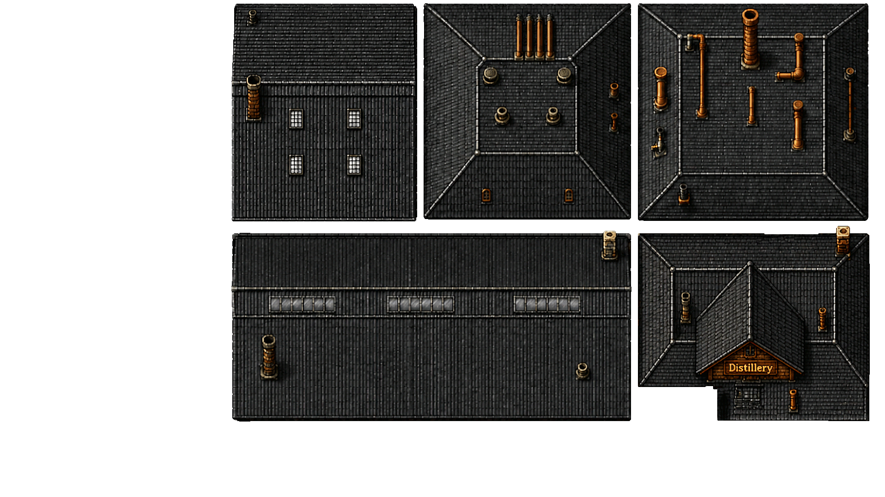
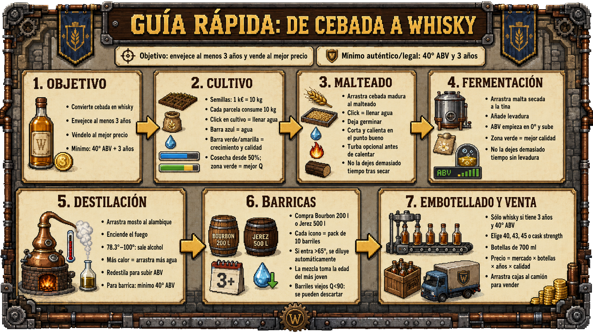
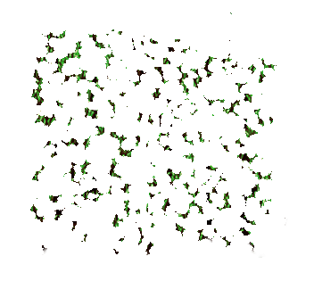
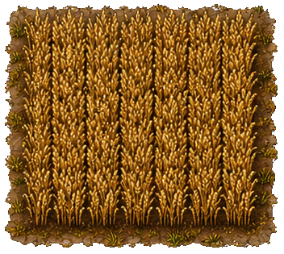
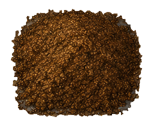
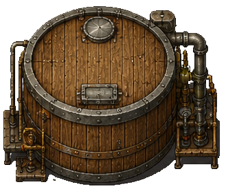
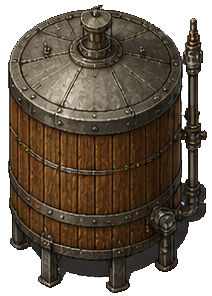
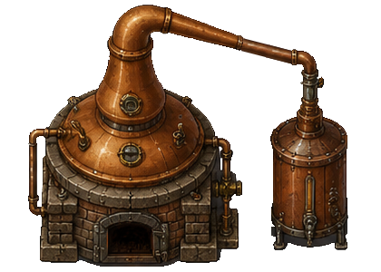
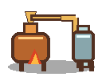
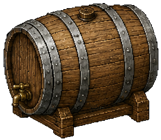

⚖️ Magnitudes comparadas
| Métrica | Referencia real | Adaptado en juego |
|---|---|---|
 Dosis de siembra |
~100–200 kg/ha en cebada; ejemplo técnico 168,8 kg/ha (GrowerExperts, Teagasc). | 20 kg / 0,105 ha = ~190 kg/ha. |
 Rendimiento cebada |
Variedades de malteado: ~5,3–5,7 t/ha; media reciente ~5,5 t/ha (Whisky Magazine). | 5,5 t/ha → ~578 kg por parcela. |
 Malta por tina |
Lagavulin: 4,4 t de grist por mash + 21.000 l de agua (Distilando). | 3,56 t de malta → 16.000 l de wash. |
 Fermentación / wash |
Wash típico 7–10% ABV; fermentaciones 48–96 h (Difford's, Whisky Advocate). | Wash máximo 9% ABV/AVB; ventana óptima visual. |
 Volumen de tina |
Lagavulin usa 21.000 l de agua por mash; Aberargie fermenta 72 h (Lagavulin, Aberargie). | 16.000 l de wash por tina llena. |
 Volumen alambique |
Aberargie: wash still 15.000 l; spirit still 10.000 l (Distilando). | 8.000 l por carga; 2 cargas por tina. |
 Grado de destilado |
New make suele salir ~68–72% ABV; Glen Scotia declara media 71% (Glen Scotia, Diageo Bar Academy). | ~907 l @ 70% por tanda antes de ajustar a barrica. |
 Llenado en barrica |
Scotch malt: llenado habitual 63,5% ABV; Bourbon/ASB ~190–200 l (The Glenlivet, WhiskyInvestDirect). | 2.000 l @ 63,5% = 10 Bourbon de 200 l. |
LPA = litros de alcohol puro = litros × ABV / 100. ABV/AVB = grado alcohólico por volumen. Semillas: 20 kg por parcela (≈190 kg/ha). Grist = malta molida lista para macerar. Wash = mosto fermentado, parecido a una cerveza fuerte, antes de destilar. Wash still = primer alambique: convierte wash en low wines. Low wines = destilado intermedio de primera pasada, normalmente ~20–30% ABV. Spirit still = segundo alambique: refina los low wines hasta new make. New make = destilado transparente recién salido, antes de barrica. Cask strength = whisky embotellado con su grado natural de barrica, sin rebajar apenas con agua.